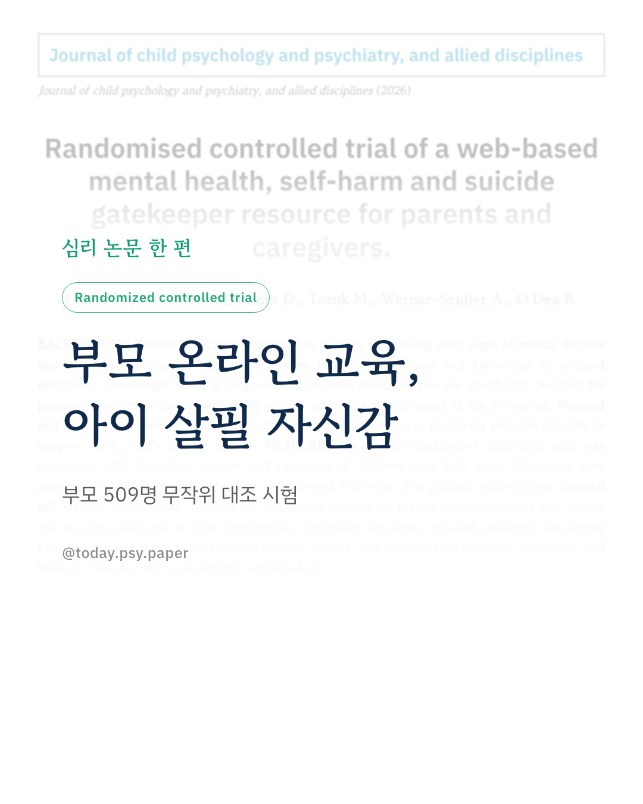
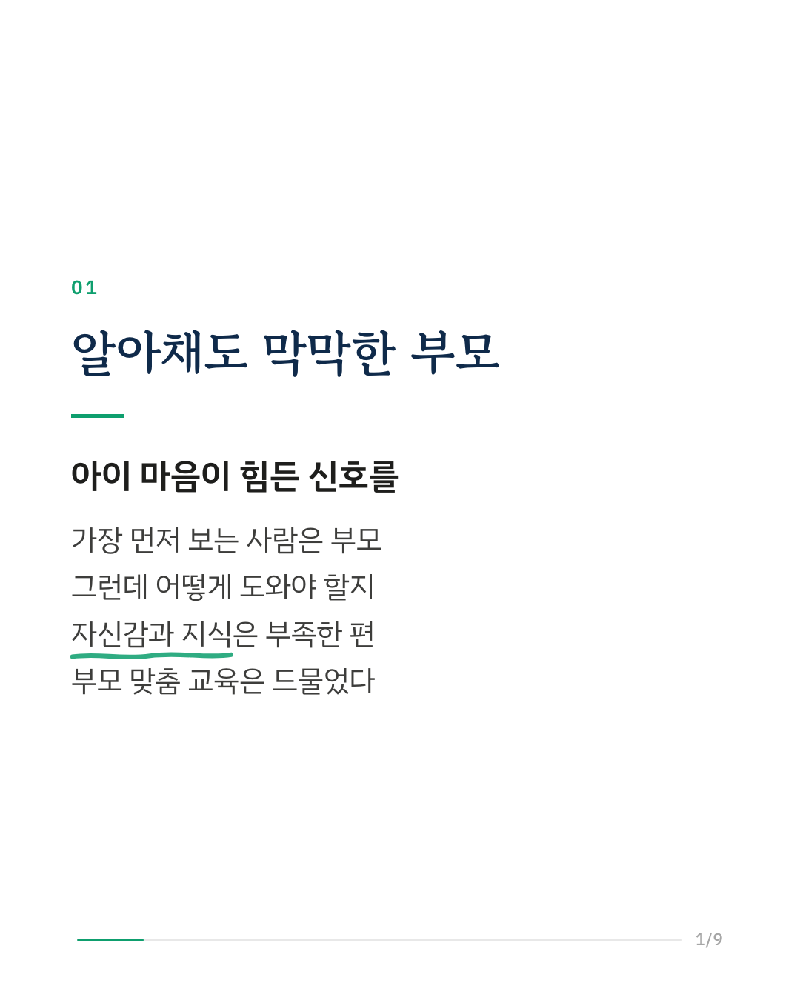
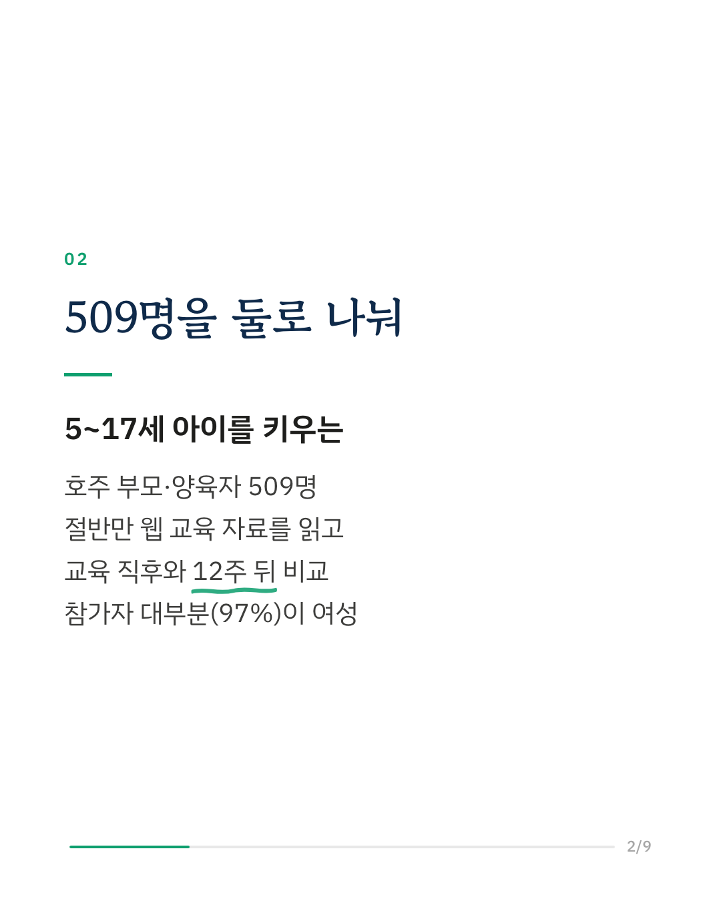
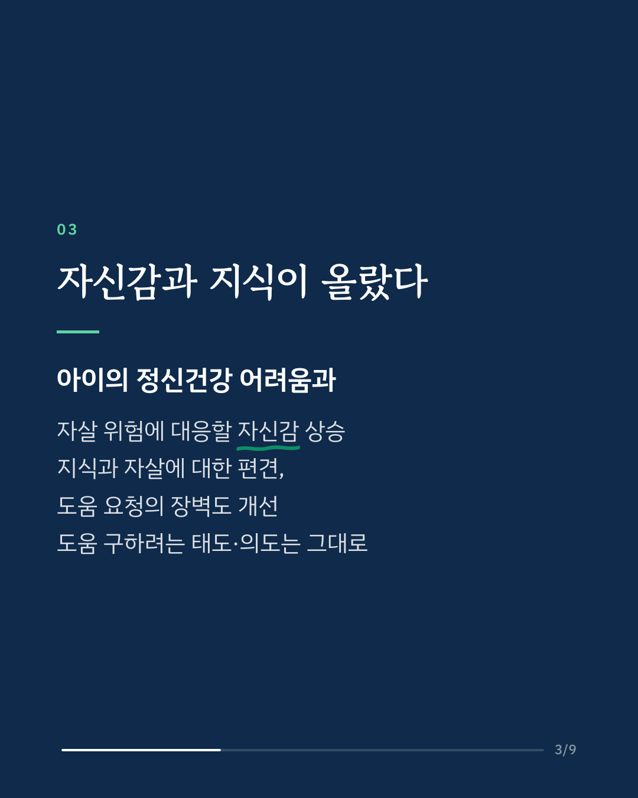
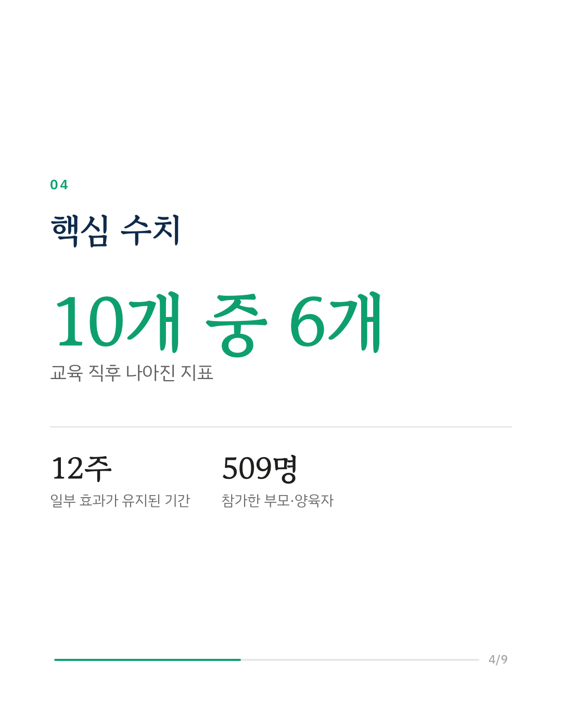
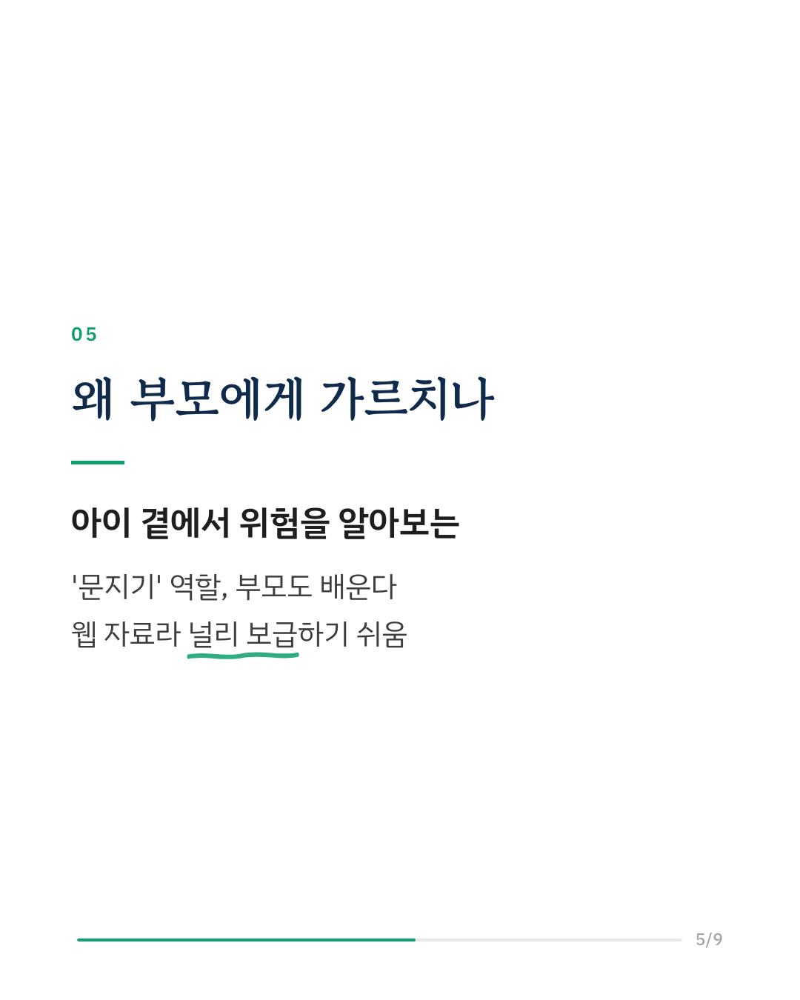
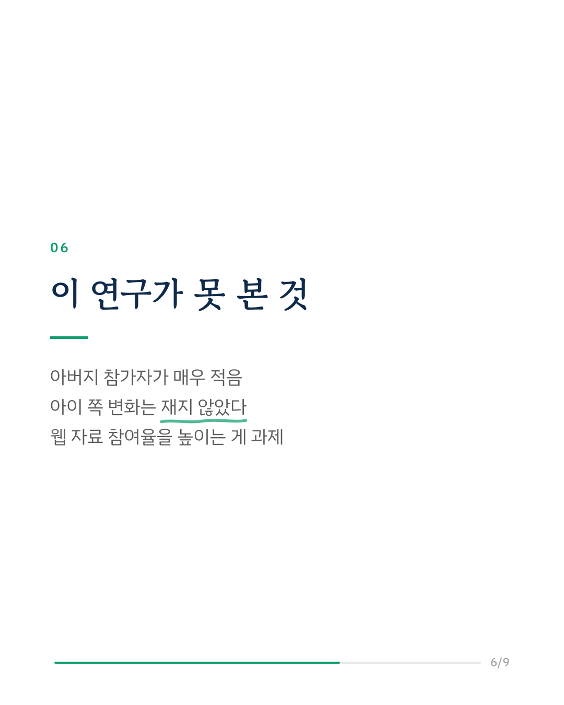
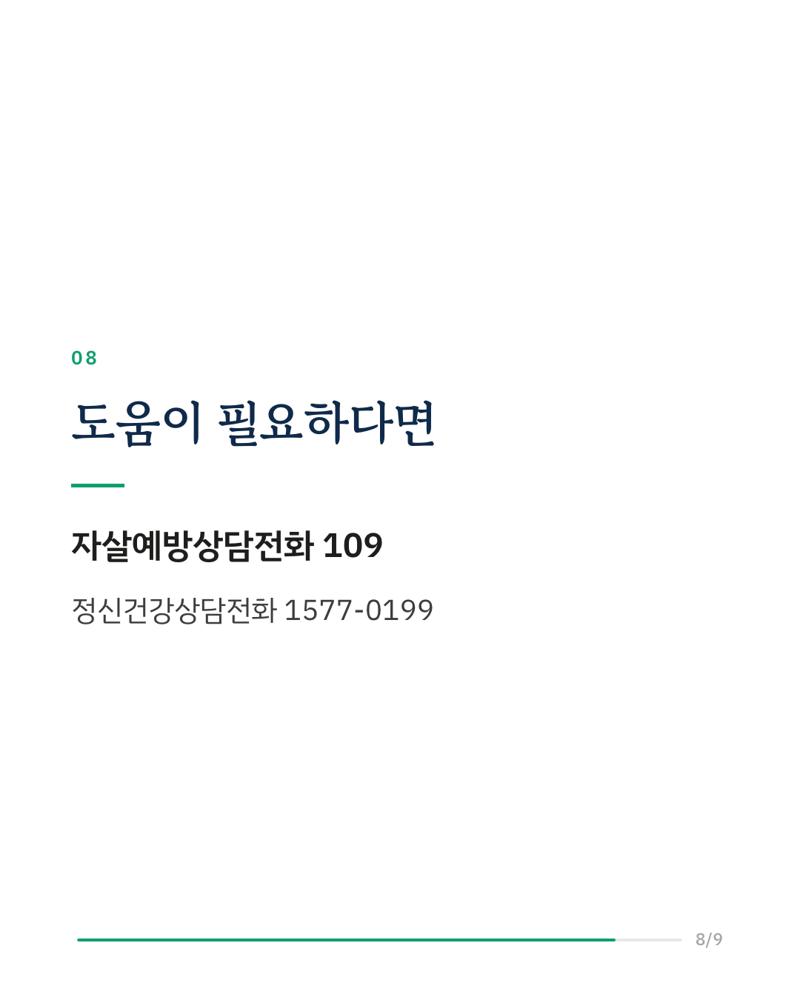
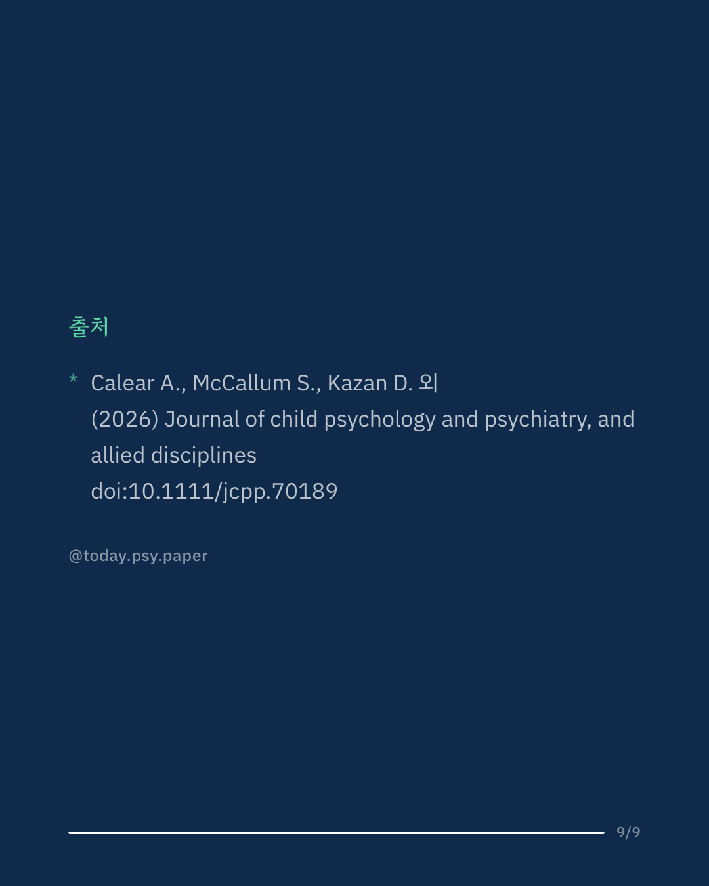

아이의 정신건강 문제를 가장 먼저 알아차리는 사람은 보통 부모입니다. 하지만 자녀의 자살 위험 신호를 보고도 어떻게 도와야 할지 몰라 막막해하는 부모가 많습니다. 호주 연구진은 5~17세 아이를 키우는 부모·양육자 509명을 무작위로 둘로 나누고, 한쪽에만 '알아보기·대응하기·지지하기'라는 웹 기반 부모 안내서를 제공해 교육 직후와 12주 뒤를 비교했습니다. 교육을 받은 부모는 아이의 정신건강 문제와 자살 위험을 알아보고 대응할 수 있다는 자신감이 높아졌습니다. 스스로 느끼는 지식 수준, 자살에 대한 편견, 도움을 구할 때 느끼는 장벽, 자살에 관한 이해도 함께 나아졌고, 이 가운데 일부는 12주 뒤에도 유지됐습니다. 반면 정신건강 전반에 대한 이해와 편견, 도움을 구하려는 태도와 의도는 달라지지 않았습니다. 연구진은 부모를 대상으로 한 게이트키퍼(문지기) 교육이 자녀를 도울 자신감과 지식을 키우는 데 효과가 있을 수 있다고 봤습니다. 다만 참가자의 97%가 여성이어서 아버지에게도 같은 결과가 나올지는 알 수 없고, 아이의 상태가 실제로 좋아졌는지는 측정하지 않았습니다. 웹 자료를 끝까지 활용하게 만드는 방법도 다음 과제로 남겼습니다. Journal of Child Psychology and Psychiatry (2026), 'Randomised controlled trial of a web-based mental health, self-harm and suicide gatekeeper resource for parents and caregivers' 힘든 마음이 들 때는 자살예방상담전화 109, 정신건강상담전화 1577-0199에서 도움을 받을 수 있습니다. DOI: 10.1111/jcpp.70189 #임상심리 #정신건강정보 #심리학연구 #논문리뷰 #자살예방 #청소년정신건강 #부모교육 #아동청소년
python3 publish.py 42281529